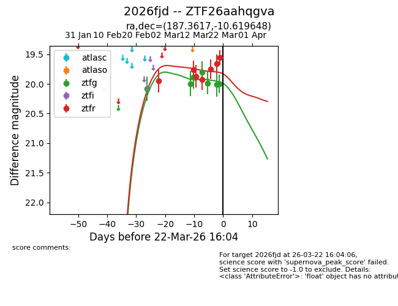
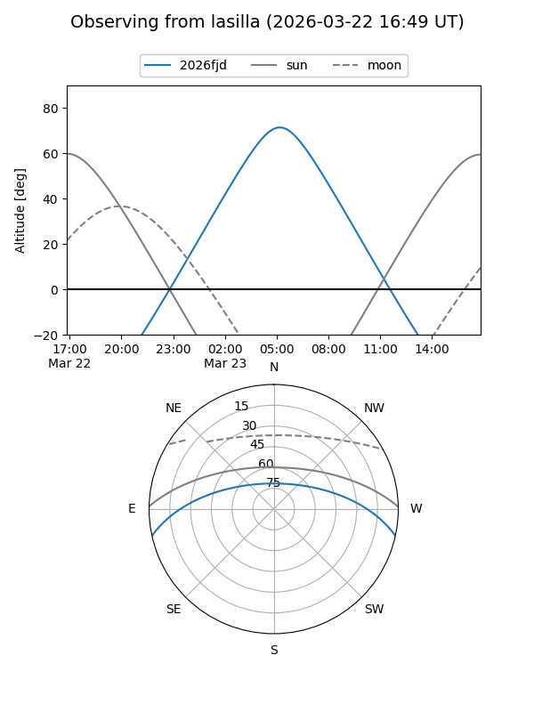
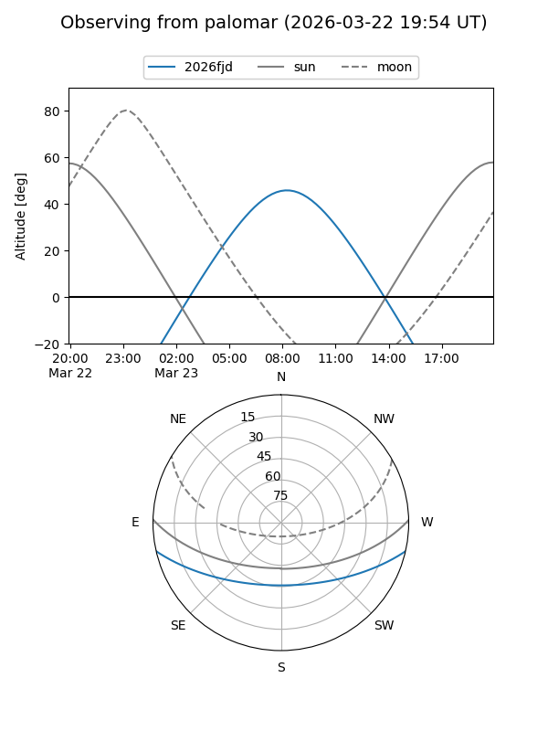
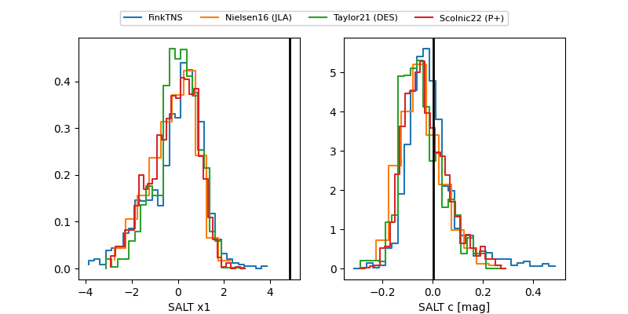

2026fjd
Target 2026fjd at 2026-03-22 16:06
Aliases and brokers:
FINK: link
Lasair: link
ALeRCE: link
TNS: link
YSE: link
alt names
ZTF26aahqgva (ztf,fink_ztf)
2026fjd (tns,yse)
Coordinates:
equatorial (ra, dec) = 187.3617,-10.61965
equatorial (HMS+DMS) = 12:29:26.81,-10:37:10.73
galactic (l, b) = (294.1582,+51.87708)
Flags:
Photometry:
last ztfg=20.00, ztfr=19.56
7 ztfg, 7 ztfr detections
Lightcurve

Visibility


Additional plots
